Mapbox wants to change the way people navigate cities and understand
our planet.
Mapbox does this by providing building blocks for integrating brand and location into any mobile or online app.
Turf.js advanced geospatial analysis for browsers and node.
Beautiful Basemaps mixing performance, science, and design with our smooth, fast vector maps that render data in real-time.
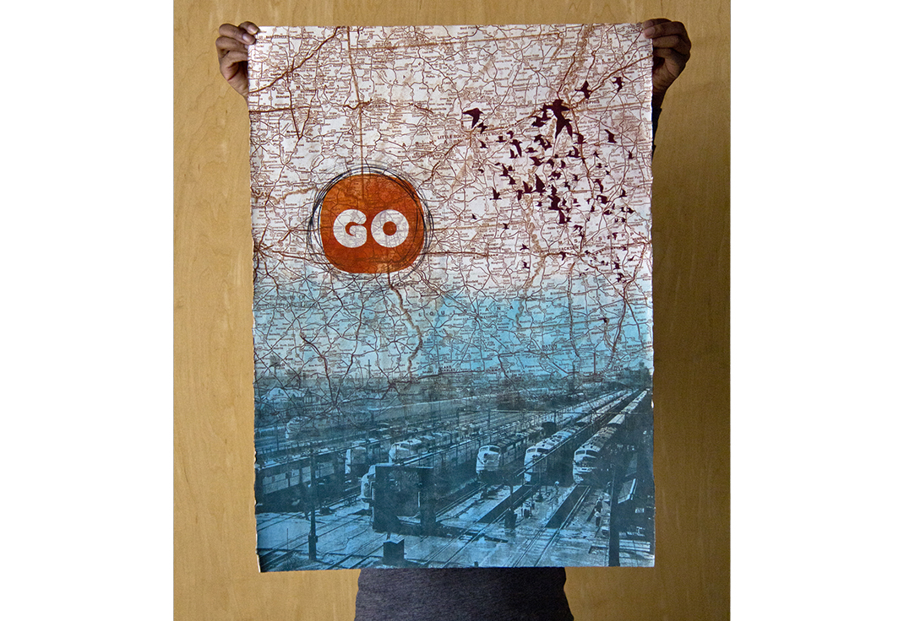
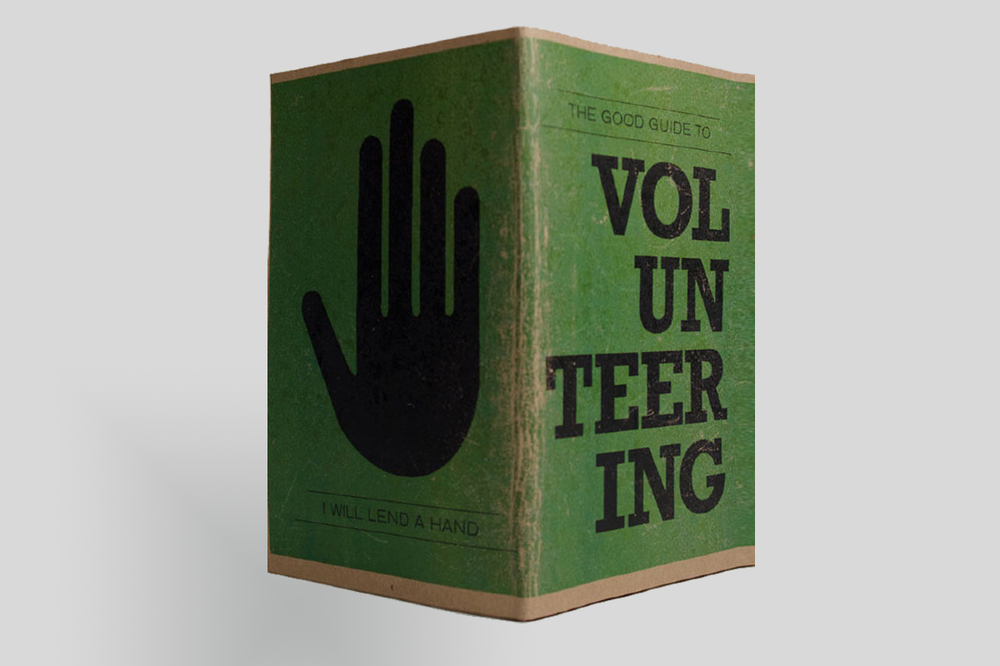
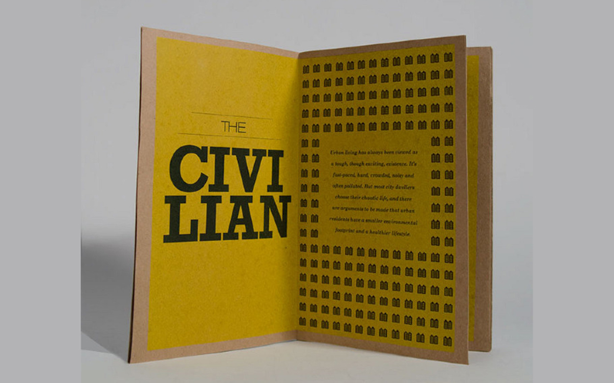
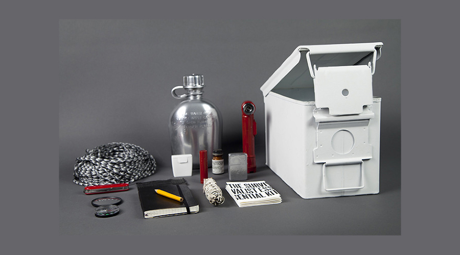
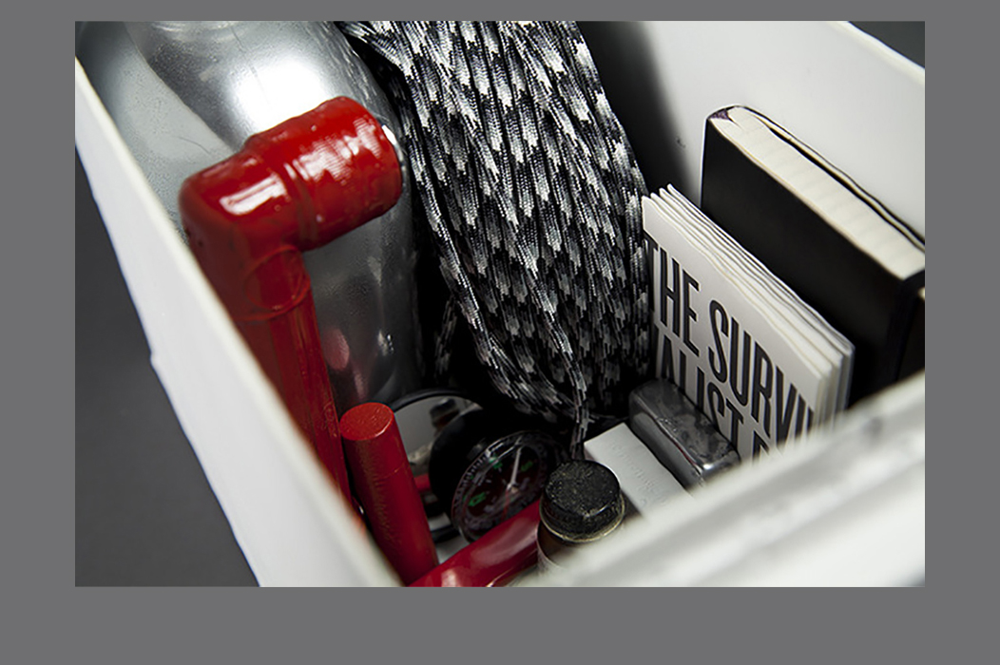
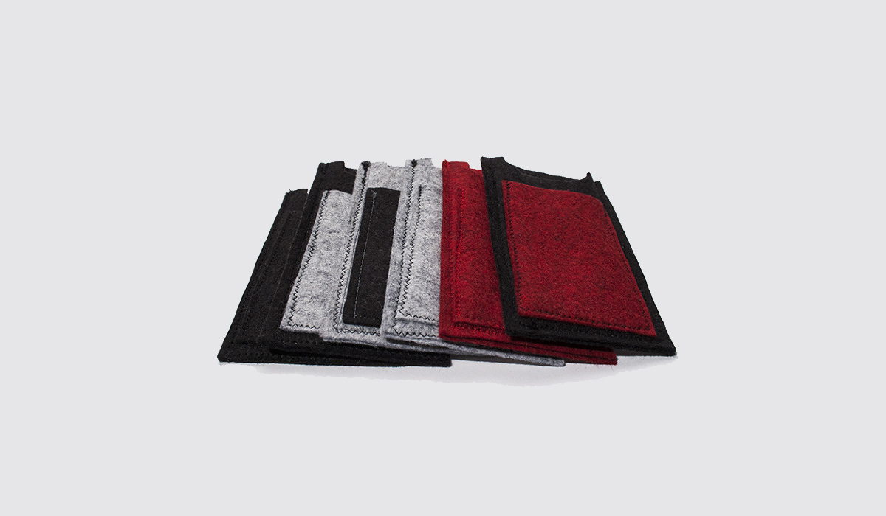
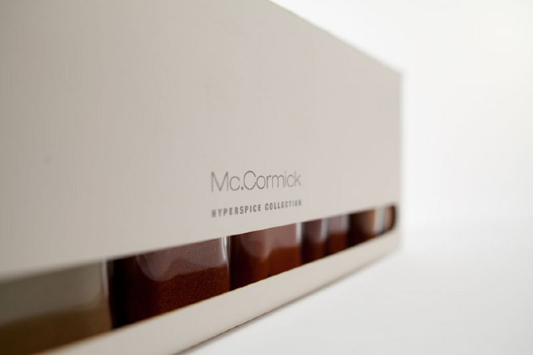
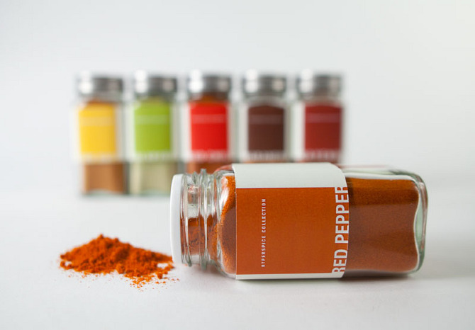
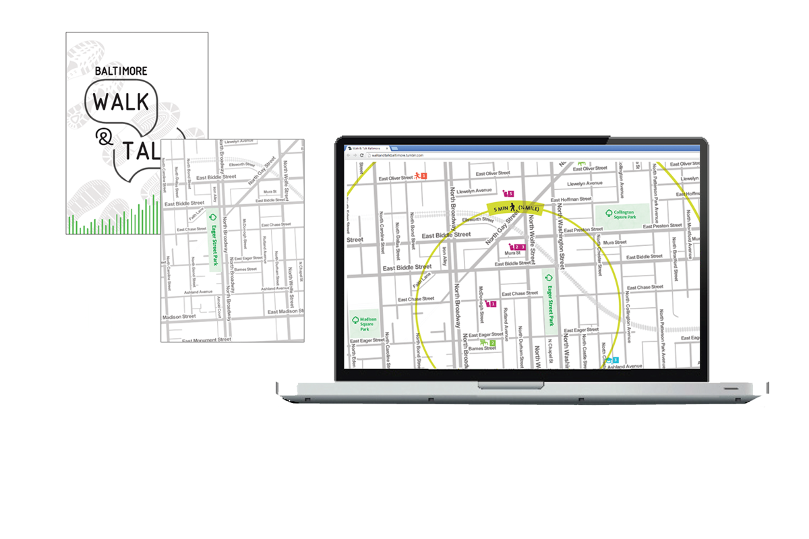
equal parts design and data
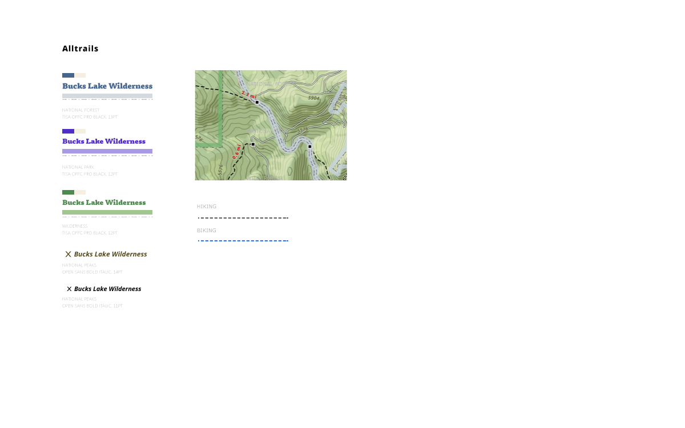
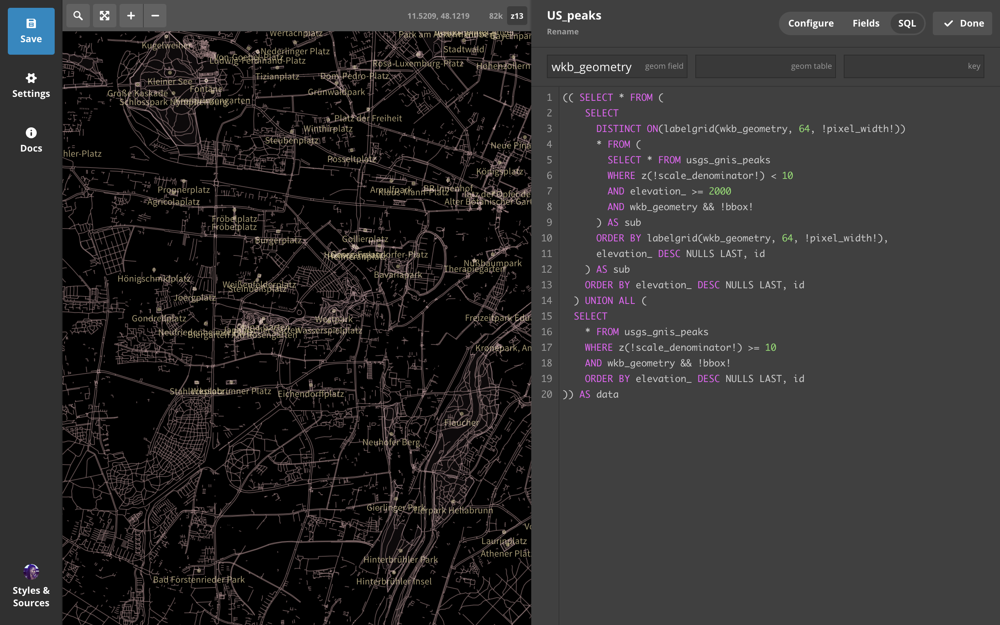
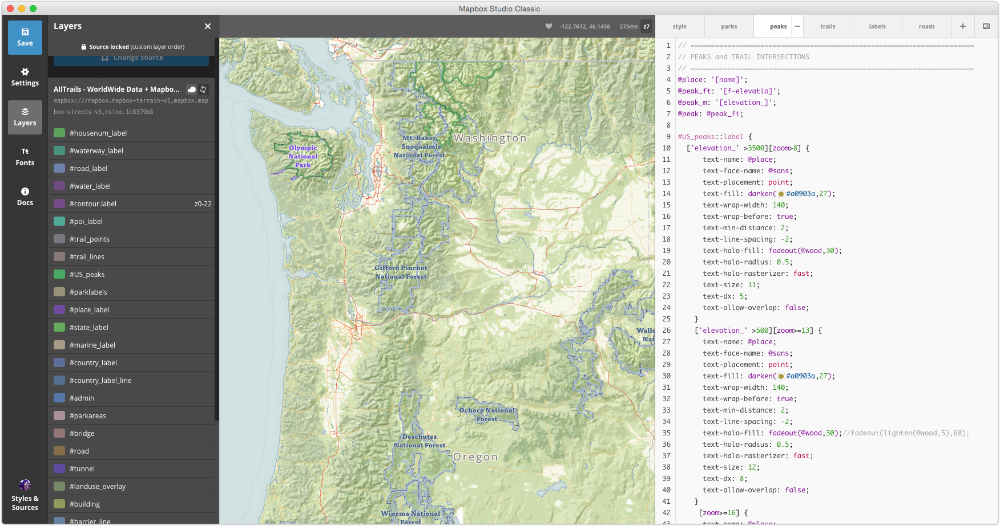
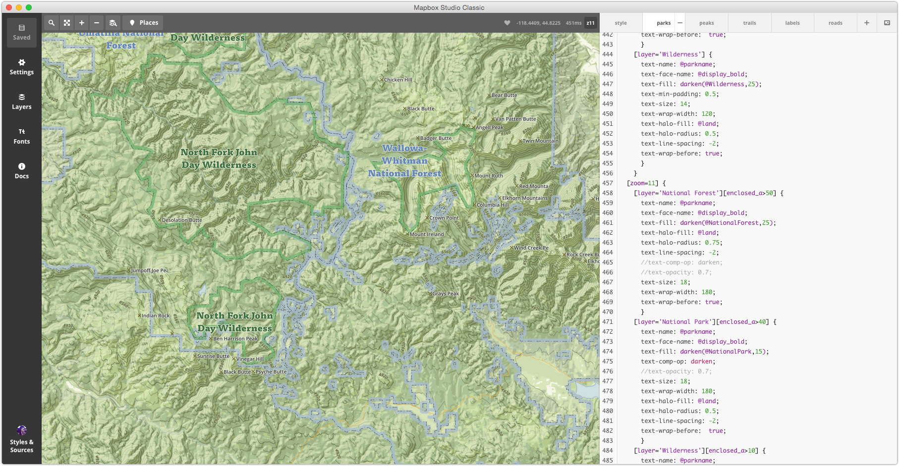
Cartographers are builders.
 Mapbox is a mapping platform for developers.
Mapbox is a mapping platform for developers.